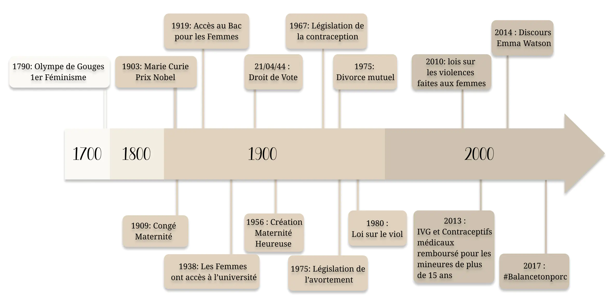

The Birth of feminism
What is feminism ?
First, we can ask ourselves what feminism is. Feminism is a movement with philosophical ideas where people seek to defend their freedoms and promote equality between women and men. Feminism appeared at the end of the eighteenth century in particular with Olympe de Gouges a figure of feminism.
Who is Olympe de Gouges ?
Olympe de Gouges is an 18th century feminist who played an important role in the creation of the feminist movement.
Indeed, in 1791 she wrote a political writing one of the most famous which is The Declaration of the Rights of Women and Citizens addressed to Marie-Antoinette. She is a great feminist figure for her struggle for equal rights among all citizens without during the French Revolution. Following her writing the Declaration of the Rights of Women and Citizens as well as for her fight against the rights of the left-behind, she was guillotined during the Terror in 1793.

3 great periods in the history of feminism
The first took place in the nineteenth and early twentieth century with the emergence of numerous demands such as the right to vote, working conditions and the right to education of women and girls. Indeed these claims were already present a little before but these resurface with The Glorious Three, under the monarchy of July or again under the Second Republic. However, no rights are granted to women. But thanks to the Falloux Law in 1850, some girls can go to school because it promulgates the obligation to create girls’ schools in cities with more than 800 inhabitants.
The second took place from 1960 to 1980 with demonstrations that denounced the inequality of laws, cultural inequalities and questioned the place of women in society. Indeed, many authors denounce these inequalities in their books such as Simone de Beauvoir. In 1949, Simone de Beauvoir published an essay «Le Deuxième Sexe» in which she denounced the role of women in society, particularly how women appear in the male imagination.
Moreover, during this period, women activists feel that they are being left behind and want to change society. The main struggles are for the recognition of domestic work, the liberation of sexuality and the right to free and free abortion. EIn 1967 and 1974, these struggles allowed the legislation of the right to contraception. In addition, women were able to obtain equality, such as in 1974 gender equality in public service competitions, the prohibition of dismissals on the grounds of sex or family status, and the introduction of divorce by mutual consent. It was on 17 January 1975 that the right to abortion was promulgated in Veil’s law, which decriminalized the voluntary termination of pregnancy.
And to finish the third takes place since the late 1980s and early 2000 with many events. This period is perceived as a continuation of the second period but is also a response to its failure.
Timeline of important moments of feminism
